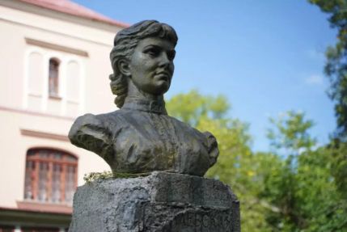

Sofía Vasílievna Kovalevskaya nació el 15 de enero de 1850 en Moscú, Rusia. Fue hija de Vasili Korvin-Krukovski, un oficial del ejército ruso, y Elizaveta Shubert, quien tenía formación cultural y científica. Desde niña mostró un gran talento para las matemáticas y una curiosidad intelectual poco común.
En esa época, las mujeres no podían ingresar fácilmente a la universidad en Rusia. Para poder estudiar en el extranjero, contrajo un matrimonio formal que le permitió viajar a Europa. En Alemania intentó estudiar en la Universidad de Berlín, pero como las mujeres no eran admitidas oficialmente, recibió clases privadas del matemático Karl Weierstrass, quien reconoció su enorme talento y la apoyó académicamente.
En 1874 obtuvo el doctorado en la Universidad de Gotinga, convirtiéndose en una de las primeras mujeres en el mundo en recibir un doctorado en matemáticas. Sus investigaciones se centraron en el análisis matemático y las ecuaciones diferenciales.
Entre sus principales aportaciones destacan:
- El Teorema de Cauchy-Kovalevskaya, relacionado con soluciones de ecuaciones diferenciales parciales.
- Contribuciones al estudio del movimiento de cuerpos rígidos en mecánica.
- Aportes importantes en análisis y física matemática.

En 1889 se convirtió en profesora en la Universidad de Estocolmo, siendo una de las primeras mujeres en Europa en ocupar una cátedra universitaria en matemáticas.
Además de su trabajo científico, Sofía también escribió obras literarias y defendió el derecho de las mujeres a la educación superior.
Falleció el 10 de febrero de 1891 en Estocolmo, Suecia, a los 41 años. Hoy es recordada como una pionera tanto en las matemáticas como en la lucha por la educación de las mujeres.